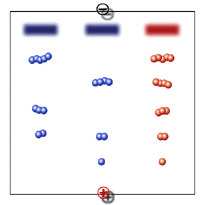

Western Blot Activity
Background
| 
|
Whereas ELISA measures antibody to whole virus and gives a "positive," "negative" or indeterminate test result, Western blotting is a more specific test. It allows one to visualize antibodies directed against each viral protein. For this reason, it is a confirmatory test for a positive HIV ELISA. In an HIV Western blotting, proteins are electrophoresed into a gel. As the proteins migrate through the gel they are separated based upon size and charge. Characteristically, smaller proteins migrate through the gel faster than larger proteins. |


The Biology Project
University of Arizona
Wednesday, Jan 15, 1998
Contact the Development Team
http://www.biology.arizona.edu
All contents copyright © 1998. All rights reserved.